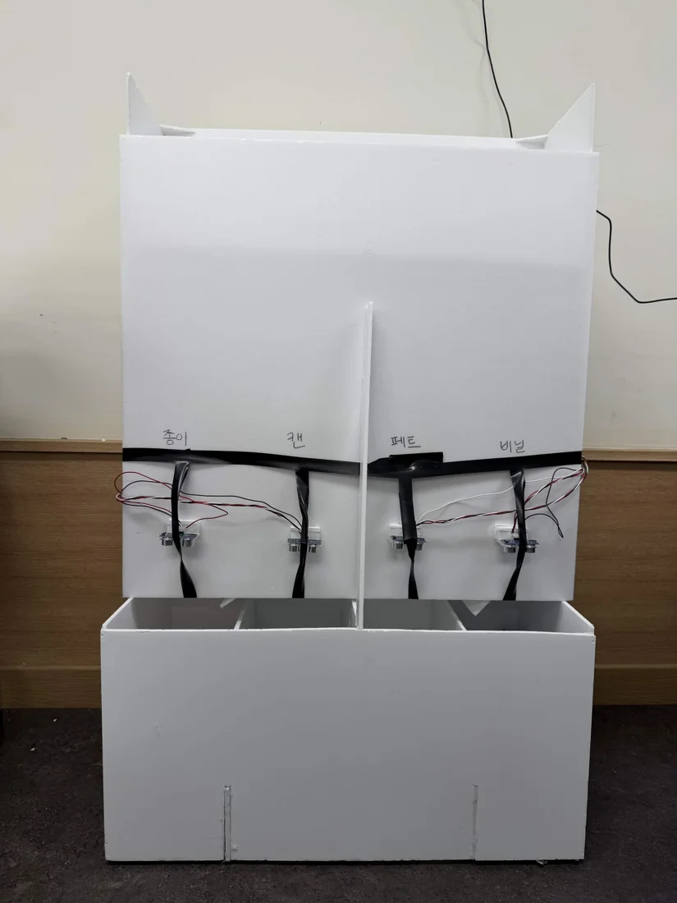
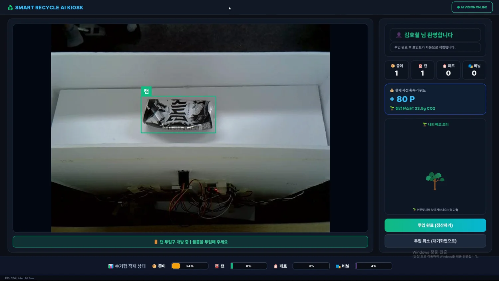

Smart Recycling Edge AI
재활용품 인식에서 분류 기구 제어, 키오스크 표시, 모바일 포인트 정산까지 연결한 Edge AI 시스템입니다.
01. 프로젝트와 본인 역할
김호철: 전체 소프트웨어 아키텍처와 통신 프로토콜·통합 검증, TensorRT 비동기 파이프라인과 검출 누락 유예 FSM, Qt 바이너리 스트리밍 및 SQLite 정산 트랜잭션 구현. 팀 전체 결과와 개인 담당 범위를 구분합니다.




02. 시스템 구조
저장소의 시스템 구조를 요약한 설명입니다. 각 블록은 데이터·제어 경로를 나타냅니다.
03. 핵심 설계 판단
통신 경계별 책임 분리
장치 명령은 UART, 영상·검출 정보는 Binary TCP, 사용자 인증·정산은 REST API와 WebSocket으로 연결했습니다.
영상 검출과 도어 상태 집계를 분리
화면의 반복 검출과 도어 상태 변화를 구분하고, 도어 개방의 rising edge를 카운팅에 사용해 반복 검출에 따른 중복 집계를 줄였습니다. 도어 개방 상태를 기준으로 한 집계이며 실제 물체의 낙하를 별도로 검증한 것은 아닙니다.
일시적 검출 누락을 상태로 처리
검출이 한 프레임 사라졌다는 이유만으로 후보를 즉시 초기화하지 않고, 설정된 miss_tolerance를 넘었을 때 상태를 갱신합니다.
04. 문제 해결 사례
- 현상
조명 변화나 블러로 검출이 잠시 끊기면 후보의 안정 감지 흐름이 초기화될 수 있었습니다.
- 원인 파악
프레임 단위 검출 결과와 도어 제어 상태를 바로 연결한 경계를 확인했습니다.
- 수정
DoorController에서 miss_count와 miss_tolerance로 누락을 유예하고, 같은 품목의 안정 감지 흐름을 유지하도록 구성했습니다.
- 확인 결과
현재 소스에서 후보 유지·초기화 조건을 확인할 수 있고 통합 시연이 공개되어 있습니다. 개별 누락 시나리오의 정량 회귀 결과는 공개 자료에서 확인되지 않습니다.
05. 검증 결과와 한계
공개 자료에서 확인한 결과
재질 인식·분류 기구·Qt 화면·QR 인증·포인트 정산을 연결한 팀 통합 시연과 2026.09.16 발표 보고서가 공개되어 있습니다. README 역할표와 보고서를 함께 확인했습니다.
모델 성능은 팀의 데이터셋·시험 조건에 따른 결과입니다. 이 페이지는 별도의 FPS·지연 보장이나 상용 환경의 장기 신뢰성을 주장하지 않습니다.
06. 관련 자료
사진·시연·기술 근거: 프로젝트 공개 저장소. 사진은 웹 열람을 위해 크기와 형식을 조정했습니다. 외부 영상은 링크에서 직접 재생할 수 있습니다.